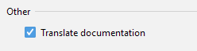

Welcome to Translation v2.9, which includes the following major updates：
- Quick Documentation translation - supports the translation of Quick Documentation
- Glossary txt export - supports exporting the Glossary to a txt file
If you would like to read these Release Notes, please click here.
Translation
Quick Documentation translation
Thanks to Nikolay Tropin (from JetBrains) for the implementation of this feature!
We've added support for the translation of Quick Documentation. You can now translate documentation in your code anytime, anywhere, without being limited to document comments in the source code.For example, on Windows, when you view Quick Documentation using the shortcut Ctrl + Q, you'll see the translated documentation immediately.


The translation option for Quick Documentation is turned on by default. If you would like to disable this function, please head to the plugin configuration page.
Glossary
Export as a txt file

Thanks to kaiattrib for implementing this feature!